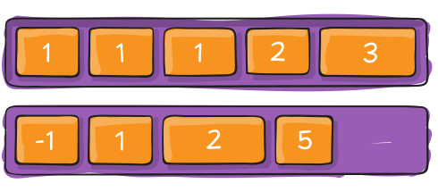

Flex-елементи - це діти flex-контейнера, елементи першого рівня вкладеності. Flex-елементи (далі просто елементи) перестають підкорятися стандартному потоку документа, втрачають свій тип (блоковий, рядковий тощо) і дотримуються правил позиціонування Flexbox-моделі.

Властивість flex-basis
Визначає початковий розмір елемента перед розподілом вільного простору. Значенням може бути будь-яка валідна величина: пікселі, відсотки, rem тощо. Для flex-елементів - це заміна властивості width, але з деякими особливостями . У прикладах цього уроку для всіх flex-елементів задавався саме flex-basis, а не width.
flex-basis: auto | значення
- Якщо вказані обидві властивості, flex-basis і width, то властивість width ігнорується.
- Властивість flex-basis - це не фінальний розмір елемента, а розмір до розподілу вільного простору.
- Властивості min-width і max-width працюють як обмежувачі розміру елемента, навіть якщо у нього вказаний flex-basis, а не width.
- Властивість flex-basis може визначати висоту, а не ширину елемента. Це відбувається у разі, якщо головна вісь - вертикальна.
Властивість flex-grow
Визначає здатність елемента, у разі потреби, займати більше місця (рости), ніж його початковий розмір. Значення задається як пропорція (частка) вільного місця в контейнері.
flex-grow: частка
За замовчуванню у всіх елементів встановлено значення 0, тобто елементи не намагаються зайняти додаткове вільне місце, навіть якщо таке є. Від'ємні значення задавати не можна.

Наприклад, якщо у всіх елементів встановлено однакове значення цієї властивості, то вони займуть однакову кількість місця в контейнері. А ось, якщо всім задати значення 1, а одному елементу 2, то він спробує зайняти в два рази більше місця, ніж будь-який інший елемент.
Гумовий контент
Типовий випадок використання цієї властивості - сайдбар фіксованої ширини і «гумовий» контент, який займає все вільне місце в рядку.
See the Pen lesson-06-flex-grow-aside by goit-academy (@goit-academy) on CodePen.
Все що необхідно - це зробити div.container flex-контейнером, після чого задати aside.sidebar фіксовану ширину, а main.content - властивість flex-grow: 1.
Футер картки
Ще один частий випадок застосування властивості flex-grow - картка з «футером» притиснутим до її низу, незалежно від обсягу контенту.
See the Pen lesson-06-flex-grow-card by goit-academy (@goit-academy) on CodePen.
Ця техніка складається з двох кроків. Перший - необхідно зробити картку flex-контейнером і поміняти напрямок головної осі таким чином, щоб вона йшла вертикально зверху вниз. Це змусить flex-елементи розташовуватися у стовпчик.
.card {
display: flex;
flex-direction: column;
}
Залишилося задати контенту div.content властивість flex-grow, щоб дозволити йому займати все вільне місце на головній осі, відсуваючи «футер» в її кінець, тобто вниз.
.card > .content {
flex-grow: 1;
}
Властивість flex-shrink
Визначає здатність елемента, у разі потреби, займати менше місця (стискатися), ніж його початковий розмір. Значення задається як пропорція (частка).
flex-shrink: частка
За замовчуванням у всіх елементів встановлено значення 1, тобто елементи будуть стискатися у разі потреби. Від'ємні значення задавати не можна. Використовується досить рідко.
Властивість align-self
Дозволяє елементу змінити своє положення на поперечній осі, перевизначивши для себе значення властивості align-items від контейнера. Аналогу для головної осі не існує, елемент може змістити себе тільки на поперечній осі.
align-self: auto | flex-start | flex-end | center | baseline | stretch

Повернемося до прикладу картки із зображенням і контентом. Для вирішення проблеми вертикального розтягування зображення ми використовували властивість align-items у контейнера. Властивість align-self дозволяє вирішити цю проблему точковіше, перевизначивши значення align-items тільки для зображення.
.card > img {
align-self: flex-start;
}
See the Pen lesson-06-align-self-card by goit-academy (@goit-academy) on CodePen.
Властивість order
За замовчуванням елементи розташовуються у тому порядку, в якому вони вказані в HTML-файлі. Використовуючи властивість order можна візуально змінити порядок розташування елементів вздовж головної осі. При цьому, в HTML-коді нічого не зміниться.
# За замовчуванням у всіх елементів встановлено значення 0 order: позиція
Ця властивість застосовується не часто через те, що порушує зв'язок між візуальним порядком елементів і тим, як їх бачить браузер та асистивні технології.
